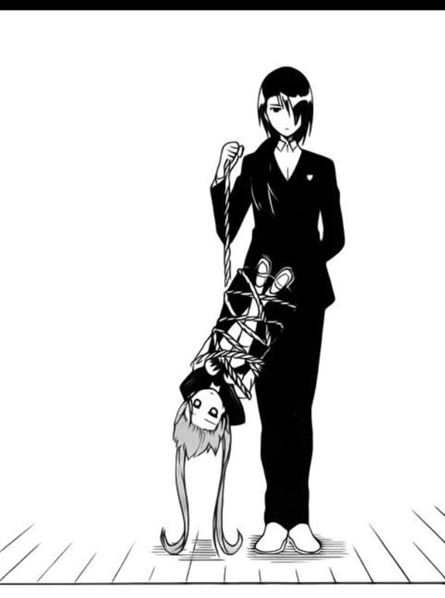

第十三章 女装万岁
本来的行程是直接返回骑士团总部的驻地，可当马车经过商业区的时候，薇莉娅却吵着闹着，非要带砂糖去看看城市的繁华。
阿斯托尔大叔拿她也没办法，只好同意了这个要求。
留下一些零花钱之后便率领车队离开了，砂糖和薇莉娅穿过闹市，来到城镇的商业街前。
步行于铺设着地砖的街道上，从此地略微仰望，能看到耸立于苍天般的庞大且古朴的城门，这是仅从马车窗口窥探而无法体会的壮观景象。
往东北与南方延伸的道路经过整顿得以畅行无阻，足以了解经济实力非同小可。
“怎么样，城里热闹吧？”
“嗯，人比想象中多，房子也更大。”
或许是基于变成了女孩子身体的状况，导致所有东西在砂糖眼中好像比实际尺寸要大，无论看什么都需要抬头。
而且情绪波动的影响似乎也被放大了，在没有战斗能力的她能够独当一面之前，大概都要依赖骑士们来行动。
结果还是和前世一样是个废柴啊。
砂糖凝视薇莉娅，想象着未来和她并肩作战的朦胧轮廓逐渐成形。
都走这一步了，即使无法回归原本的世界，也希望能够幸福地生活下去。
“我脸上有什么脏东西吗？”
“不！没有。”
“呵呵，难道是看我这模样看到入迷了吗？”
薇莉娅摆出游刃有余的笑容，然后当场旋转了一圈，上好面料的制服裙摆随风飘扬，金属护甲发出和谐的脆响。
对总是孩子气的她来说，这是罕见的淑女举止。
“看来小砂糖很中意这身打扮呢。”
“才没有……嗯。”
砂糖面红耳赤低下了头，完全就是一个被发现在逞强的小朋友。
骑士装是军队统一发放的，重视效率和战斗性能，薇莉娅也是迫不得已才穿的。
想要适合可爱美少女的衣着风格，果然还是应该到正经门店里购买。
“好嘞，今晚第一个目标就是给小砂糖买件漂亮的小裙子。”
“我拒绝！”
“不行哟，好好打扮自己可是美少女的义务。”
“不不不，我不要。”
现在穿这身简易的连衣裙就已经够让砂糖不舒服了，要是穿上更‘萌’的女装，她会羞耻到爆炸的！
“休想逃。”
“饶了我吧。”
砂糖刚迈开步子企图逃离魔爪，就被薇莉娅扼住了命运的后颈，如同提溜小猫似的被拖进了服装店。

哪怕出于本人意愿提出了需要活动方便的要求，却因为挑选时店员默契地不肯让步，因此目前的服装换成了别出心裁的可爱设计。
斜肩的短裙礼装，露出一侧的锁骨和肩膀，深色束腰紧贴身材曲线。
素衣罩体，布料边缘略微透明，一双水润匀称的玉腿裸露着，暗示诱人的邀请。
洁白薄纱织成的手套尽显主人高雅尊贵。
虽然直到最后砂糖都大喊“别当我是小孩！”、“居然说我可爱？”或者“我对可爱的衣服一点都不感兴趣！”等等。
但又不能一直和薇莉娅斗嘴，结果还是配合店员的推荐，买下了看起来运动比较轻松的衣服。
走出门外，店员满心欢喜地欢迎下次再来，只不过砂糖已经记住了这家服装店，绝对绝对不会来第二次！
“不愧是小砂糖，每一件都很合身。”
“……有这么好看么。”
“是啊，虽然店员早就说过了，但真的好可爱！”
“可爱吗……就算莉娅姐这样说，我也不会觉得高兴。”
回应的语气很冷淡，脚步却显得轻快。
就和男人被异性称赞帅气时会喜上眉梢是一样的道理，才不是被夸奖可爱内心还感到高兴。
只要受人赞美，不论是谁都会开心的。
“阿嚏。”
下半身凉飕飕的有点不习惯，忍不住打了个喷嚏。
她并没有意识到，自从重生以来，情感表达的次数也变得丰富起来。
这并非指她原先缺乏感情，硬要形容的话，生前给人的感觉是封闭的，对外界刺激不感兴趣。
大概是因为身体变动导致肉体牵连精神开始变化，但真相仍不清楚。
“接下来该去哪呢，小砂糖肚子饿不饿？要不带你去吃晚餐吧，我知道好多美味的小吃店哦。”
“莉娅姐，等一下。”
“小砂糖不想吃美食吗？”
对薇莉娅的问话她摇摇头。
不能再被继续牵着鼻子走了，砂糖有自己想要完成、而且很重要的事做。
“莉娅姐，城里有没有图书馆？”
“图书馆么，有的哦。”
“那可以带我去吗？”
“可以倒是可以，不过小砂糖去那种超级无聊的地方干嘛，那里都是些老头子呆的地方呢。”
根据漫画里的经验，首先需要在‘新手村’，也就是这个城镇收集详细的情报。
提到哪里集中了文明发展的知识和历史，这样的地方自然就是图书馆。
“理由暂时不能说。”
“好吧，对市民开放的图书馆是在东区，现在赶过去还有时间。”
“东边，我明白了。”
听过了阿斯托尔大叔的介绍，这座城是经济和交通的枢纽，那么肯定也能读到相关资料。
首先需要弥补对这个世界历史认知的欠缺，考虑到这点图书馆对穿越者而言是非常有用的。
砂糖不等薇莉娅陪同，快步朝东边的方向前进，然而没走几步就被来往交织的人潮带走了。
“喂，小砂糖，你也太心急了。”
“莉娅姐，这边。”
一看便知道她不习惯行走于热闹的街上，这样子实在太危险了，薇莉娅连忙把她抓住。
“不要随便冲出去，这样很危险。”
“嗯？”
“呜哦！”
由于把砂糖拽了回来，原本打算从暗巷里面冲出来的男人顿时扑了个空，跌倒在地。
“当然，也会有臭男人从小巷里冒出来呢，一定要牢记哦。”
“谢、谢谢。”
要不是薇莉娅提醒，她根本就没注意到这个浑身酒臭味的壮汉，幸好没发生严重的后果。
“不要紧吧……”
“这男人一看就皮厚，小砂糖不用担心。”
“可恶，你这小鬼……！！！”